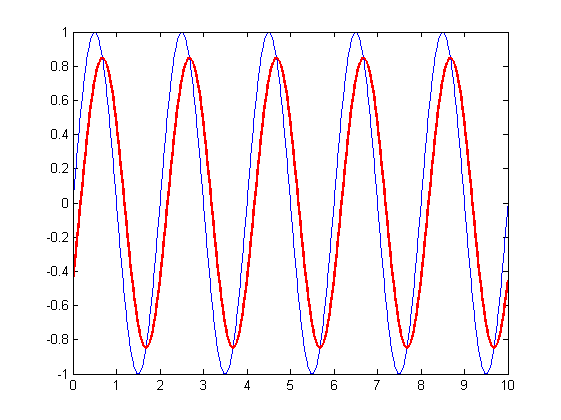
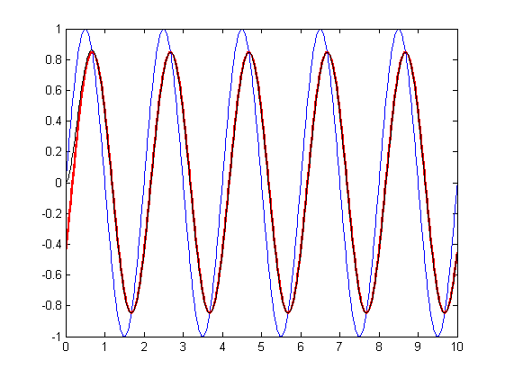
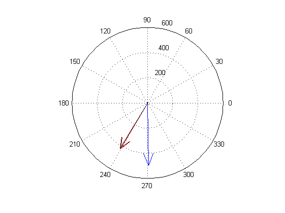
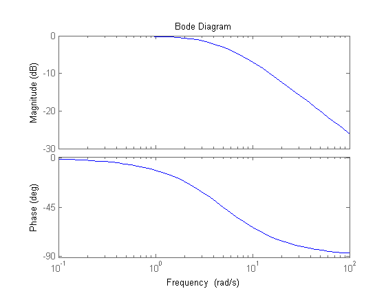
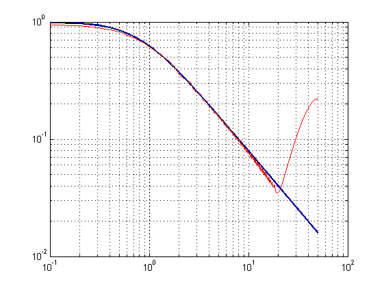
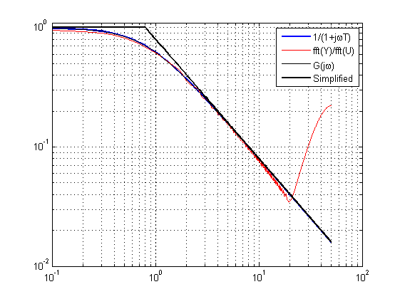
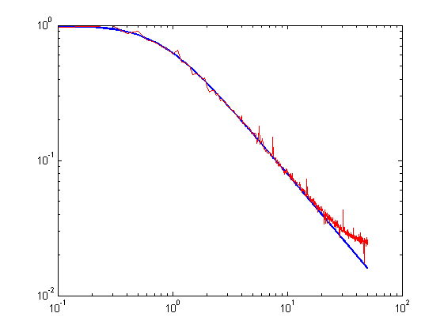
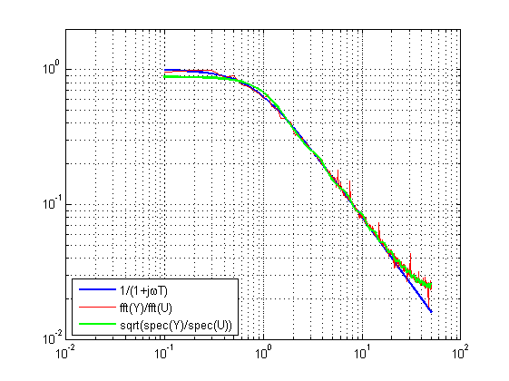
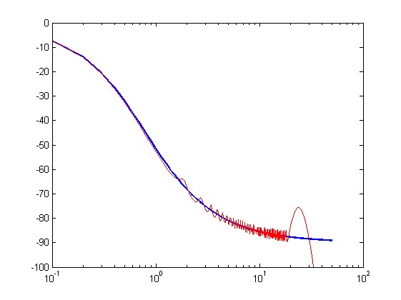

Uppgift Spektrum
Contents
a) Räkna ut vad utsignalen borde bli genom att beräkna G(jw)
T=0.2;
t=0:0.01:10;t=t';
u=sin(pi*t);
plot(t,u)
hold on
Gjw=1/(1+T*1j*pi);
plot(t,abs(Gjw)*sin(pi*t+angle(Gjw)),'r','linew',1.5);

b) Simulera utsignalen (kalla den y) mha tf och lsim och jämför med resultatet i a)
G=tf(1,[T 1]);
y=lsim(G,u,t);
plot(t,y,'k');

c) Beräkna fft för u och y och beräkna Y(jw)/U(jw)
U=fft(u);
Y=fft(y);
[~,imax]=max(abs(U));
Y(imax)/U(imax)
Gjw
figure
compass(U(imax));
hold on
compass(Y(imax),'r');
compass(U(imax)*Gjw,'k')
ans =
0.7252 - 0.4376i
Gjw =
0.7170 - 0.4505i

d) Använd kommandot bode på G
figure
bode(G)

d) Generera tre bodediagram manuellt
f=linspace(0,50,501);
w=2*pi*f;
figure
loglog(f,abs(1./(1+T*1j*w)),'linew',1.5)
hold on
u1=chirp(t(:),.01,10,20);
t=t(:);
y1=lsim(G,u1,t);
Y1=fft(y1);
U1=fft(u1);
loglog(f,abs(Y1(1:501)./U1(1:501)),'r')
Gjw=bode(G,w);
Gjw=squeeze(Gjw);
loglog(f,Gjw,'k')
grid on

Förenklat bodediagram
w1=1/T;f1=w1/2/pi;
i1=find(f>f1,1,'first');
loglog(f(i1:end),f(i1)./f(i1:end),'k','linew',2);
loglog(f(1:i1),ones(i1,1),'k','linew',2);
ylim([1e-2 1.1])
legend('1/(1+j\omegaT)','fft(Y)/fft(U)','G(j\omega)','Simplified')

Extra uppgift Hur blir det med vitt brus som insignal?
u2=randn(size(t));
y2=lsim(G,u2,t);
U2=fft(u2);
Y2=fft(y2);
figure
loglog(f,abs(1./(1+T*1j*w)),'linew',1.5)
hold on
loglog(f,abs(Y2(1:501)./U2(1:501)),'r')

Spectrum istället för fft
Hs=spectrum.cov(30);
U2=psd(Hs,u2,'Fs',100);
Y2=psd(Hs,y2,'Fs',100);
ff=U2.Frequencies;
loglog(ff,sqrt(abs(Y2.Data./U2.Data)),'g','linew',2);
grid on
ylim([1e-2 2])
legend('1/(1+j\omegaT)','fft(Y)/fft(U)','sqrt(spec(Y)/spec(U))','location','SW')

Fas
figure
semilogx(f,angle(1./(1+T*1j*w))*180/pi,'linew',1.5)
hold on
semilogx(f,angle(Y1(1:501)./U1(1:501))*180/pi,'r')
semilogx(f,angle(Gjw)*180/pi,'k');
ylim([-100 0])
